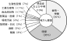

2021年
問題27 ヒトの発がんの原因に関する次の記述のうち，最も不適当なものはどれか．
（1）発がんの要因として，食事が3 分の1 を占める．
（2）感染症が発がんの原因となることがある．
（3）ラドンのばく露は肺がんのリスクを上昇させる．
（4）DNA に最初に傷を付け，変異を起こさせる物質をプロモータという．
（5）ホルムアルデヒドには発がん性が認められる．
2021年
問題27 正解（4） 頻出度AAA
遺伝子DNAに傷をつけて変異を起こさせる物質はイニシエータ（initiator：創始者，発起人，起爆剤などの意）という．
プロモータ（promoter：興行主，促進者）は細胞の増殖を促進したり，活性酸素を増大させてがん化を促進する物質など．
-(1) ，-(2) ヒトの発がん要因（2021-27-1図）．
2021-27-1図 ヒトの発がん要因

出典 公益社団法人 日本建築衛生管理教育センター
「新建築物の環境衛生管理第2版第1刷」中巻52頁 図4-3-2(2)
-(2) ラドンはα線を放出して壊変する放射性の希ガスで，ウラニウム，ラジウムを含むすべての物質がラドンの発生源となる．呼吸によって体内に入ったラドンとその娘核が長期にわたりα線を放出し続け肺癌の原因となると言われている．多くの土壌石材，それらを含む建材が発生源である．人の自然放射線による被曝線量のうち約半分を占めている．コンクリートや花崗岩の建物内外の線量は室内のほうが大きい．ラドンガスは，極めて微量な物質であるため体積濃度や重量濃度で表すのは実用的ではない．ラドンガスにおいて問題となるのは放射能であるので，放射能濃度で表される．これは，単位時間単位体積当たりの崩壊数で放射能の量を表すものであり，1m3の空気中で1秒間に1回の崩壊があれば1Bq/m3と表す．わが国における放射能濃度の室内のレベルは，約15.5～20Bq/m3である．
-(5) ホルムアルデヒドは，国際がん研究機関（IARC）により上咽頭がんや白血病などのリスクを高めると評価され，アスベストなどと共に最高ランクのグループ1に指定されている．